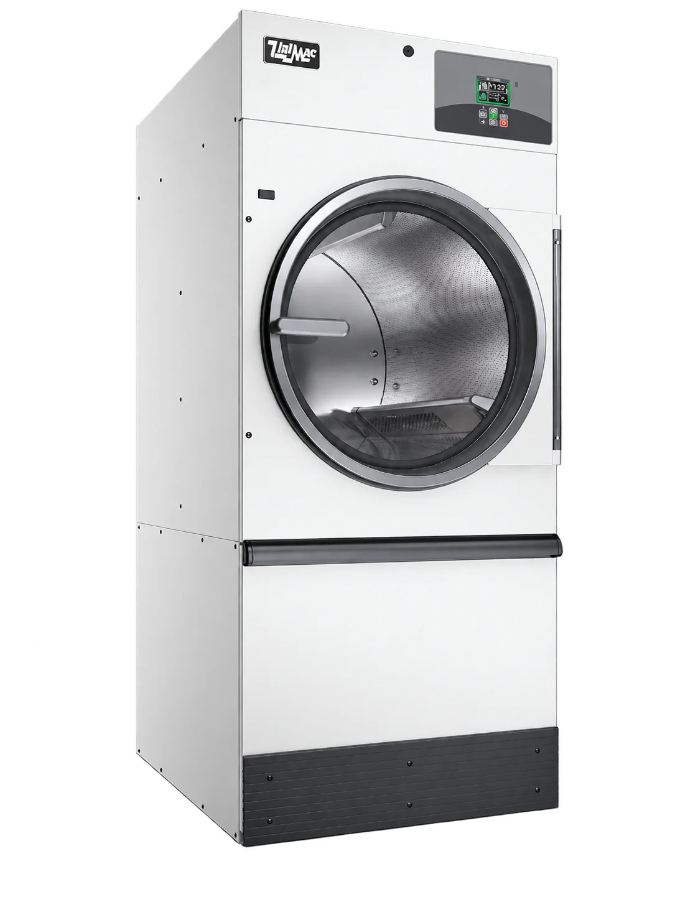
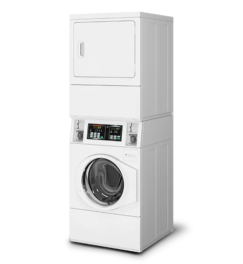

Blanchisserie
Service de blanchisserie avec machines à laver industrielles. Dites-nous quels vêtements vous devez laver pour consulter leurs instructions d'entretien.
Vérifier le lavageTEMPS PLEIN · BUANDERIE ET COUTURE
Renseignez-vous sur les services de lavage et de séchage et préparez vos questions avant d'apporter les vêtements.
DES SOLUTIONS POUR VOTRE QUOTIDIEN
Renseignez-vous sur le service dont vous avez besoin.
Nous examinons avec vous le type de vêtement et son entretien.
Service de blanchisserie avec machines à laver industrielles. Dites-nous quels vêtements vous devez laver pour consulter leurs instructions d'entretien.
Vérifier le lavageSécheuses industrielles pour compléter l'entretien de vos vêtements. Vérifiez la compatibilité du service avec vos vêtements.
Consulter le séchageVous avez besoin d'un réglage ou d'une réparation ? Décrivez l'agencement et nous examinons ce qui peut être fait avec votre vêtement.
Consulter un arrangementCHAQUE VÊTEMENT A SON SOIN
Dites-nous ce que vous apportez.
Nous confirmons avec vous le service approprié.
Renseignez-vous sur le lavage et le séchage de vos vêtements habituels, selon leurs étiquettes et besoins.
Vérifiez mes vêtementsRenseignez-vous sur les serviettes, les draps et les objets encombrants. La compatibilité est vérifiée avant de confirmer.
Renseignez-vous sur mes textilesDécrit le réglage ou la réparation. Nous examinons le tissu, l'état et la possibilité de le confectionner.
Consulter un arrangementL'ÉQUIPE DERRIÈRE LE SERVICE
Laveuses et sécheuses industrielles
pour nos services de blanchisserie.

